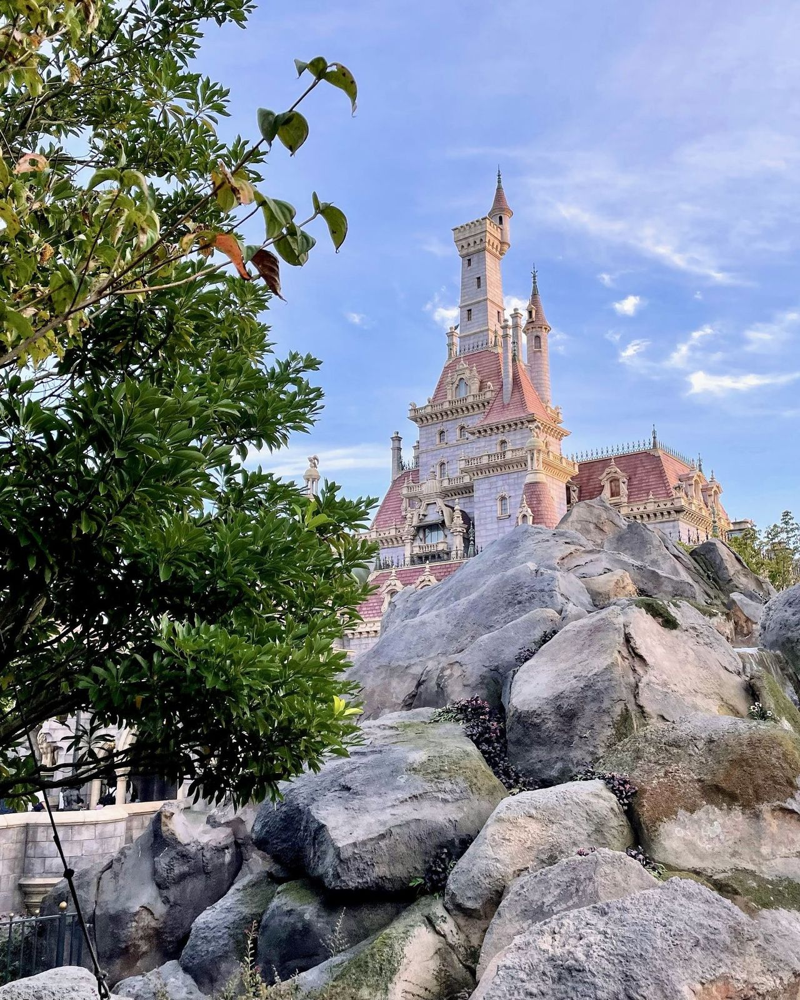
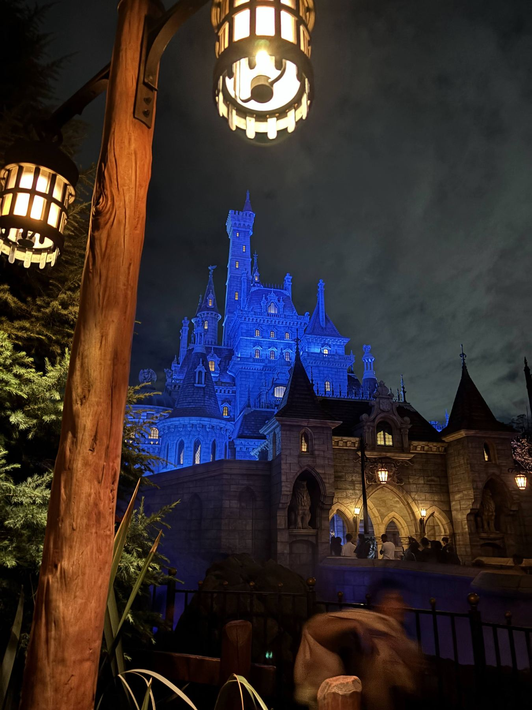
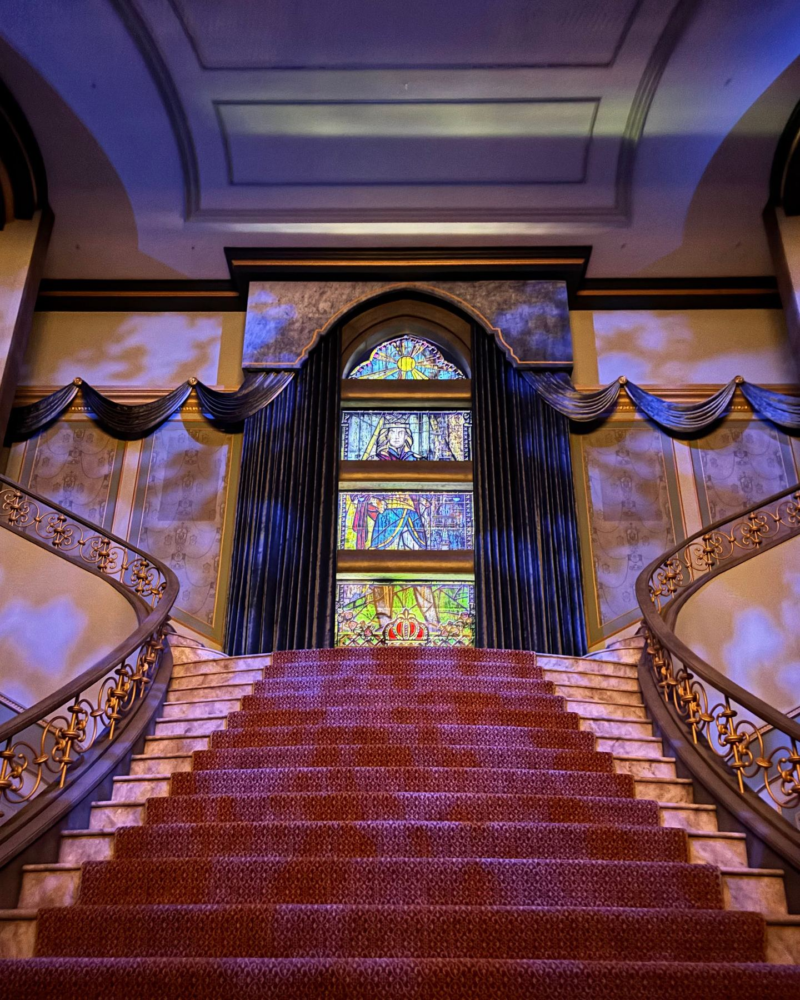
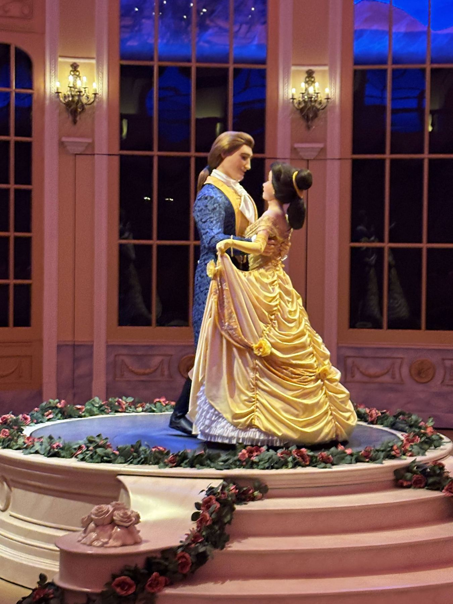

2020年、ファンタジーランドに誕生した『美女と野獣』のエリア。ここは単に映画のセットを美しく再現しただけではなく、エリアに足を踏み入れた瞬間から映画のストーリー順に景色や空気感が変化していく、計算され尽くした「歩く映画体験」の仕掛けが施されています。
エントランスに佇むベルの父の家「モーリスのコテージ」を抜けると、のどかで活気ある「村の広場」へと出ます。ここでは映画の「朝の風景」が聞こえてきそうな、陽気なフランスの片田舎が広がっていますが、村を抜けて野獣の城へと進むにつれ、景色は一変して薄暗い「深い森」へと変わります。映画でモーリスが狼に襲われ迷い込んだ、あのひんやりとした不気味な森が、緻密な植栽と岩組によって見事に演出されているのです。城の前に架かる石橋を渡ることで、ゲストは「人間の世界（日常）」から「魔法の世界（非日常）」へと完全に引き離されます。

アトラクションの主役である「野獣」。ディズニーの書籍などでは便宜上「アダム王子」と呼ばれることもありますが、映画本編やアトラクション内では一切その名は登場せず、常に「ご主人様」や「野獣」という名義のみで語られる謎めいた存在です。彼の年齢にまつわるバックグラウンドを紐解くと、極めて切ない設定が浮き彫りになります。
彼が魔女の呪いを解かなければならない期限は「21歳の誕生日」。そして、お城の召使いたちが語る「呪われてから10年が経った」という事実。これらを組み合わせると、彼が傲慢さの罰として野獣の姿に変えられてしまったのは、わずか11歳の少年期（現代でいう小学5年生前後）だったことが示唆されています。幼くして、心を閉ざしたまま冷たい城に幽閉されていた彼の孤独が、この物語の真の深みなのです。
劇中、ベルと野獣がスープを器から直接すする、ぎこちない朝食のシーンがあります。なぜ彼は食事の作法や、スプーンの使い方を忘れてしまっていたのでしょうか。イマジニアたちは空間をデザインする際、以下の3つの解釈を込めて野獣の動き（モーション）を設計しました。
1. 教育の未熟説： 11歳という幼さで呪われたため、高貴な教育を十分に受けられないまま成長してしまった説。
2. 野生化説： 野獣の強靭な身体を得たことで、道具やマナーを必要としない獣としての生活に甘んじていた説。
3. 記憶の喪失説： 呪いを受けた時の凄まじいショックにより、人間としての理性や記憶が一部欠落してしまった説。
ベルとの出会いを通じて、野獣が不器用に、しかし愛おしく人間らしさを取り戻していく姿こそが、このお城の凍りついた時間を溶かしていくのです。
城内に足を踏み入れたゲストは、ただアトラクションを待つのではなく、お城に遺された記憶をめぐる「6つの空間」を通過します。
1. 応接室： 天井の高い不気味なロビー。よく見ると、呪いで家具に変えられたルミエールやコグスワースの気配が、暖炉の彫刻装飾のなかに隠されています。
2. 朝食部屋： ベルと野獣が少しずつ心の距離を縮め始めた、温かな光の差し込む小さなプライベートダイニング。
3. 鎧の廊下： ひとりぼっちの晩餐会の後、コグスワースの案内で通りかかった中世の甲冑が立ち並ぶ通路。
4. 玄関の広間： 大きな折り返し大階段が印象的な、アトラクション全体の導入部となる巨大な吹き抜けのプレショーエリア。

5. 洗濯場： ベルを温かくもてなすために、お城の召使いたちが忙しく立ち働いている作業場。
6. 生活エリア： 乗り場の直前、野獣のプライベートスペース「西の塔」の入り口へと繋がる不気味な回廊。
プレショーが行われる「玄関の広間」では、バルコニーにベルと野獣のアニマトロニクスが登場しますが、システムメンテナンスの際などには、アニマトロニクスが登場しない「Bモード」と呼ばれる特別プログラムが作動します。
このBモードが始動するとバルコニーのカーテンは閉じたままになりますが、中央のステンドグラスの映像投影システムが自動的に変更。通常時では絶対に上映されない「2つの追加ステンドグラスシーン」が美しく映し出され、物語を完璧に補完する特別な演出に切り替わります。もし出会えたら、非常に幸運な瞬間です。
そしてアトラクション本編でゲストを乗せるのは、床にレールのない「トラックレスライド」を採用した魔法のカップ。2000年に同じ東京ディズニーランドの『プーさんのハニーハント』が世界で初めて実用化したトラックレスライド（LPSシステム）の技術を20年かけて極限まで進化させ、まるで本当にダンスを踊っているかのような息の合った動きを実現させました。ゲストは食器たちの宴に招かれた「主賓」として、彼らと共に踊る体験をします。
アトラクションを降りた後も、ベルの村には映画ファンを魅了する仕掛けが多数隠されています。「ラ・タベルヌ・ド・ガストン」では、彼の傲慢さと自己顕示欲を象徴する巨大な鹿の角の椅子や肖像画がゲストを迎えます。
ガストンの酒場やその周辺で販売されている『ル・フウズ・チュロス（アップルキャラメル味）』。サクサクの香ばしい生地から、甘酸っぱいリンゴのフルーティーな香りとキャラメルの上品な甘さがふわっと広がる、パークを訪れるたびに必ず買い求める一押しメニューです！待ち時間の小さなお供にぜひ味わってみてください。
さらに、地面の泥道（コンクリート）を注意深く見つめると、ディズニー映画に登場する「名馬たち」が残した、それぞれ形の異なる「6つの蹄鉄（ていてつ）の足跡」がリアルに刻まれています。これらを踏みしめながら、その先の冒険へ思いを馳せてみてください。
| 刻まれた馬の名前 | 登場作品 | 蹄鉄のデザインとキャラクター背景 |
|---|---|---|
| PHILIPPE（フィリップ） | 『美女と野獣』 | ベルとモーリスの愛馬。本エリアに最も馴染み深く、標準的で実用的な蹄鉄。 |
| ACHILLES（アキレス） | 『ノートルダムの鐘』 | 白馬。軍馬らしく幅広で、非常に頑強かつ重厚な鋼鉄製。 |
| FROU-FROU（フルー・フルー） | 『おしゃれキャット』 | パリの街を走るコーチ馬。細身でスマートな美しい装飾が施された蹄鉄。 |
| KHAN（カーン） | 『ムーラン』 | 戦場を翔けた黒馬。異国風の武骨で引き締まった機能美のある蹄鉄。 |
| HORACE（ホーレス） | クラシック・ミッキー | ミッキーの最初期からの友人。ややコミカルで丸みを帯びた形状。 |
| ANGUS（アンガス） | 『メリダとおそろしの森』 | 超大型の作業馬。他の馬を圧倒する桁違いの大きさを誇る。 |
アトラクション最大の見どころは、ウォルト・ディズニー・イマジニアリング（WDI）の最新技術によって作られたベルや野獣たちの「オーディオ・アニマトロニクス（動くロボット）」です。開発初期から東京向けに完全オリジナルとして設計された本施設では、ベルの滑らかな動きに、日本人の持つ繊細な「所作や身のこなし」（丁寧なお辞儀や、静かなうつむき方、気品あふれる手の動き）が細部まで取り入れられています。だからこそ、彼女の動きは私たち日本のゲストの目にも信じられないほど自然で、胸を打つようなリアリティを持って心に迫るのです。

そしてクライマックスの、瀕死の野獣が魔法の力によって人間に戻る復活の瞬間。プロジェクションマッピング、光学トリック、そして高度なロボット工学が寸分の狂いもなく完全に融合した、目の前で「本物の魔法」が起こる奇跡のイリュージョン。魔法が解け、二人が踊る広間のラストシーンは、私たち自身が魔法の目撃者となったことを確信させてくれます。
最終編集日：